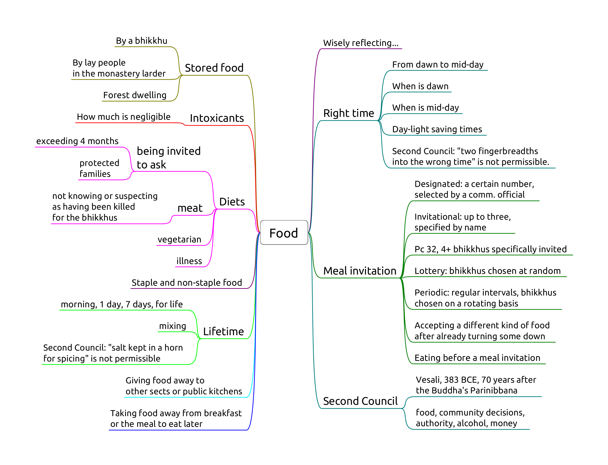

Read here or download as PDF below for printing:
- schedule.pdf
- sign-up-sheet.pdf
- vinaya-class-notes.pdf
- chanting-refcard.pdf
- chanting-refcard-4on1.pdf
- vinayakamma-chart.pdf
Schedule

Sign-up Sheet

Notes

Chanting Refcard

Vinayakamma

Introduction
- Pāṭimokkha: 227 rules, 4 entails automatic expulsion (defeat)
- They contain moral principles, sense restraint, situational protocols, etiquette
- No physical punishment but procedures, forfeit, confession
- The Buddha established the rules one at a time
- Dhamma-Vinaya, Teaching and Discipline
- Self-motivated: the Vinaya can't stop evil, it aims to guide virtue
- Each rule includes its origin story, amendments and exceptions
- 5 factors: object, effort, intention, perception, result
- Blanket exemptions: insane, possessed by spirits, delirious with pain, the first offender
- Common non-offences: unknowingly, unthinkingly, unintentionally
- 4 Great Standards to judge modern cases
- Min. 4 bhikkhus for Sangha actions, decisons and Patimokkha
- Min. 5 bhikkhus for ordination and Kaṭhina
- Ordination requires min. 5 bhikkhus
- Disrobe at free will but follow the correct procedure
- 'Kor wat' house-rules per monastery
- International agreements (Mahathera Samakorn, ECM)
Purpose and functional operation of the Vinaya
The ten reasons for the establishing of the Pāṭimokkha:
- "For the excellence of the Sangha;
- for the wellbeing of the Sangha;
- for the control of ill-controlled bhikkhus;
- for the comfort of wellbehaved bhikkhus;
- for the restraint of the āsavā in this present state;
- for protection against the āsavā in a future state;
- to give confidence to those of little faith;
- to increase the confidence of the faithful;
- to establish the True Dhamma;
- to support the Vinaya."
(Vin.III.20; A.V.70)
Four things not to be done, akaraṇīya:
- sexual intercourse: as a man with his head cut off cannot live
- theft: as a withered leaf separated from its stalk cannot become green again
- depriving a human being of life: as a flat stone, broken in half, cannot be put together again
- claiming false attainments: as a palm tree, cut off at the crown, is incapable of further growth

The Four Great Standards
Not already prohibited:
if it conforms with what is prohibited,
or it goes against what is allowable,
that is prohibited.
Not already prohibited:
if it conforms with what is allowable,
or it goes against what is prohibited,
that is allowable.
Not already allowed:
if it conforms with what is prohibited,
or it goes against what is allowable,
that is prohibited.
Not already allowed:
if it conforms with what is allowable,
or it goes against what is prohibited,
that is allowable.
(Mv.VI.40.1)
Useful quotes
"Now, Ananda, if it occurs to any of you -- 'The teaching has lost its authority; we are without a Teacher' -- do not view it in that way. Whatever Dhamma and Vinaya I have pointed out and formulated for you, that will be your Teacher when I am gone." (DN 16)
"The non-doing of all evil, the performance of what is skillful, and the purification of one's mind: This is the Buddhas' message." (Dhp 183)
"On one occasion the Blessed One was living in Vesali, in the Great Wood. Then a certain Vajjian bhikkhu went to him... and said: 'Venerable sir, this recitation of more than 150 training rules comes every fortnight. I cannot train in reference to them.'
'Bhikkhu, can you train in reference to the three trainings: the training in heightened virtue, the training in heightened mind, the training in heightened discernment?'
"'Yes, venerable sir, I can....'
'Then train in reference to those three trainings.... Your passion, aversion, and delusion -- when trained in heightened virtue, heightened mind, and heightened discernment will be abandoned. You -- with the abandoning of passion... aversion... delusion -- will not do anything unskilful or engage in any evil.'"
(AN 3.85)
"'Bhikkhus, this recitation of more than 150 training rules comes every fortnight, in reference to which sons of good families desiring the goal train themselves. There are these three trainings under which all that is gathered. Which three? The training in heightened virtue, the training in heightened mind, the training in heightened discernment...."
(AN 3.88)
If there is some obstacle to [the practice of the training rules], due to time and place, the rules should be upheld indirectly and not given up entirely, for otherwise there will be no principles (for discipline). A community without principles for discipline cannot last long...
(Entrance to the Vinaya, I.230)
Overview of the rules
- 4 Pārājika: defeat
- 13 Saṅghādisesa: involving community actions
- 2 Aniyata: indefinite result
- 30 Nissaggiya Pācittiya: entailing forfeiture
- 92 Pācittiya: to be confessed
- 4 Pāṭidesaniya: to be acknowledged
- 75 Sekhiya: etiquette to be trained in
- 8 Adhikaraṇa-samatha: means of settling issues
Reference books
Vinaya Mukha, Somdet Phra Mahā Samaṇa Chao, 1916
A guide to the Vinaya written in Thai, first English edition published in 1969. It is still used as the official textbook on Vinaya for the examinations run by the Thai Council of Elders, and taken as authoritative through much of Thailand.
The Book of Discipline, I.B. Horner, 1938
- Vol. 1-3: Suttavibhaṅga -- Pāṭimokkha rules and origin stories
- Vol. 4: Mahāvagga -- rules of conduct and etiquette
- Vol. 5: Cullavagga -- elaboration of etiquette and duties
- Vol. 6: Parivāra -- summaries and analysis of rules
The Buddhist Monastic Code, Ṭhānissaro Bhikkhu, 1994
- Vol. 1: The Pāṭimokkha Rules
- Vol. 2: The Khandhaka Rules
The Concise Buddhist Monastic Code, Bhikkhu Anon, 2015
Killing and Harming
- Pr 3, Killing a human being
- Pc 61, Killing an animal
- Pc 20, Pouring water containing living beings
- Pc 62, Drinking water containing living beings
- Pc 10, Digging soil
- Pc 11, Damaging living plants or seeds
Pr 3, Killing a human being

Origin: bhikkhus develop aversion to the body and kill themselves or ask an assassin to kill them.
Recommending death or euthanasia can be parajika if the instruction is followed. Hinting fulfils effort, such as "death would be better for you".
A human being is regarded as such from the time when the 'being to be born' is established in the womb. This is an uncertain time, sometime after conception during embryo development. The embryo can't develop otherwise.
"If consciousness were not to descend into the mother's womb, would name-and-form take shape in the womb?"
"No, lord."
"If, after descending into the womb, consciousness were to depart, would name-and-form be produced for this world?"
"No, lord."
"If the consciousness of the young boy or girl were to be cut off, would name-and-form ripen, grow, and reach maturity?"
"No, lord."
(DN 15)
Pc 61, Killing an animal
Giving an order fulfils effort.
Result is a factor.
Doesn't include animals smaller than visible to the naked eye. Doesn't include accidents (sweeping). No room for 'phrasing it right'.
Origin: Ven. Udayin is killing crows by shooting them with arrows, cutting their heads off and putting them in a row on a stake. The Buddha scolds him, "How can you, foolish man, intentionally deprive a living thing of life? ..." (Vibh. Pc 61)
Mercy killing by the owner, or euthanasia practices by vets fulfil effort. Having a pet means responsibility.
Acting in doubt, going ahead anyway is dukkata. Such as when the bhikkhu thinks that cleaning an item may or may not kill living beings. Trying carefully not to kill insects while cleaning is not an offence.
Perception is a factor. Stepping on a twig with the intention to crush a snake is dukkata.
Pc 20, Pouring water containing living beings
Knowing they will die from pouring it. It can also include knowingly adding poisonous substances.
If the water doesn't contain living beings, but the bhikkhu thinks it does, pouring or using it is dukkata.
Giving an order fulfils effort.
Result is not a factor. Doesn't include accidents.
Can't water plants if one plans to eat its fruit, but may indicate it for others.
Kutis may use small gutters as water moats around the stilts to keep out ants. One has to treat the water with household chemicals, otherwise mosquitoes will breed in the water.
Pc 62, Drinking water containing living beings
Knowing they will die from drinking it, even accidentally.
Using water strainers or robe. Determining a corner of the sanghati as a water-filter.
Result is not a factor.
Pc 10, Digging soil
Origin: relates to the ancient belief that soil is alive, and loses life when dug up.
Object: 'genuine' soil.
Not genuine soil:
- dust from wind erosion
- pure or mostly rock, stones, gravel, sand are never 'genuine' soil
- burnt or already dup up soil is not 'genuine' until rained on for four months
If someone digs up the soil, a bhikkhu may shovel it into a wheelbarrow without offence.
Effort: Digging, burning, making a hole, or giving command to do it.
Putting tent pegs in the ground is to be confessed.
Non-offenses:
- unknowingly, unthinkingly, unintentionally
- indicating a general need or task
- asking for clay or or soil
- digging a trapped person or animal out
Allowance to indicate a need or general task to a lay person by "wording it right (kappiya-vohāra, "allowable expression," or "wording it right").
A specific command would be an offense ('dig a hole here'), but an indication ('dig a hole') of a desire or intent would not ('it would be good to have a hole for this post').
Pc 11, Damaging living plants or seeds
Origin: a bhikkhu cuts down a tree where a deva was living. The rule is formed later, when people complained of the bhikkhus mistreating one-facultied life.
Object: Living plant or seed. Lower plant life (i.e. mold, algae, fungi) is not included.
Effort: cutting, breaking, cooking, or getting others to do it.
Fruit with seeds: allowance to make allowable (kappiyam). Fruit can be kappied in one "heap".
To 'kappi' fruit is about the feelings of the donor, not killing the fruit or transfering kamma.
Knowingly eating un-kappied seeds is dukkata.
Non-offenses:
- unknowingly, unthinkingly, unintentionally
- asking a lay person for flowers etc. in general, or indicating a general task
- removing branches or leaves which are already dead
- can cut a trapped person or animal out
- counter-fire
Note: Pc 10 and Pc 11 prevents bhikkhus from engaging in agriculture, which is probably part of the intended results, although not their direct origin.
Stealing
- Pr 2, Stealing
- NP 25, Snatching back robe
- Pc 59, Using cloth or bowl under shared ownership


Pr 2, Stealing
See the maps Pr 2 and Pr 2 -- Effort.
The ECM made a decision that items in the stores belong to all bhikkhus of the ECM monasteries, therefore a bhikkhu can't steal what is already theirs by agreement.
When carrying items, there is a difference in ownership whether the sender says "this is his" or "this is for him".
Smuggling is parajika (undeclared taxable items at customs).
Breaking a promise is dukkata (not following software or website TOS (Terms of Service) or EULA (End User License Agreement)).
NP 25, Snatching back robe
Object: a piece of robe-cloth, at least 4x8 fingerbreadth.
Perception: one still considers the robe as one's own, otherwise it could be parajika.
Intention: impelled by anger or displeasure. Taking it on trust is not an offense.
Effort: snatching back or having someone to snatch it back.
Dukkata for:
- giving the command
- other than cloth
- snatching from a non-bhikkhu
- hinting with anger
Non-offenses:
- recipient returns the robe on his own accord
- donor takes it back on trust
- hinting without anger
Pc 59, Using cloth or bowl under shared ownership
Vikappana is an arrangement whereby a bhikkhu places robe or cloth under shared ownership so that it may be stored for any length of time.
While the shared ownership is in effect, none of the bhikkhus may use the item.
If the bhikkhu simply gives the robe back to the stores, he has given up ownership of it and another bhikkhu would be free to take it.
Vikkappana allows a bhikkhu to determine a smaller sanghati while travelling, but not entirely giving up his regular sanghati.
Object: robe-cloth, min. 4x8 fingerbreadths, that one has placed under shared ownership.
Perception of ownership is not a factor.
Effort: using the cloth without the ownership being rescinded.
Non-offenses:
- rescinded ownership
- using it on trust (shared with friends)
Sexual Conduct
- Pr 1, Sexual intercourse
- Sg 1, Intentional emission of semen
Pr 1, Sexual intercourse

- "... For that action you would only suffer death, for this action you will suffer in hell.
- As a man with his head cut off cannot become one to live again.
- As a withered leaf separated from its stem cannot be joined again.
- As a flat stone that has been broken in half cannot be put together again.
- As a palmyra tree cut off at the crown is incapable of further growth."
Sg 1, Intentional emission of semen

- "with the same hand you use to eat the gifts of the faithful"
- trust and good will of the supporters, social contract
Result is fulfiled when the semen enters the urinary tract, since at that point the process is irreversible, even when semen was not emitted, being blocked in some way.
Probation and Penance

(Figure: Overview of the procedure after a Sanghadisesa offence, comparing the case of immediately informing and concealing.)
One doesn't have to wait until one is certain about the offence, speaking to another bhikkhu about a doubtful situation will at least clear one's conscience that one is not concealing it.
A bhikkhu who comitted a sanghadisesa must inform another bhikkhu as soon as possible, but at most until the next dawnrise. The Sangha must meet and at his request, allow a six-dawn period of penance (mānatta). If he concealed the offence, a probation period (parivāsa) is required beforehand.
The Sangha will determine when and where the bhikkhu should observe the parivāsa and mānatta. These periods are determined by the Sangha and don't have to occur back-to-back.
After completing mānatta he can only be rehabilitated as a bhikkhu in regular standing by a community meeting of at least 20 bhikkhus. He is not required to stay at that particular monaster after having received rehabilitation.
If he commits another sanghadisesa before rehabilitation, he must inform a bhikkhu and ask a Sangha of at least four to 'send him back to the beginning.'
There is allowance to interrupt and set aside the penance or probation for a period of time, for example when many visiting monks are expected to arrive at the monastery for an event.
Characteristic duties during penance:
- not receiving duties of respect from other bhikkhus
- inform visiting bhikkhus that he is undergoing penance
- every day, notify every bhikkhu in the monastery of his offence
- stay under a separate roof than the other bhikkhus
- only leave the monastery when accompanied by four other bhikkhus
The duties during probation are the same as during penance, except:
- inform the Sangha of his offence every fortnight, not every day
- only leave the monastery when accompanied by a single other bhikkhu
Sensual thoughts
Sensual thoughts are not designated a penalty, but they grow quickly and lead to one's downfall.
The thought occurred to the deva living in the sala tree ... "It's pleasant, the touch of this maluva creeper's soft, tender, downy tendril." (MN 45)
When reconizing that one has been caught up in a sensual fantasy, immediately visualizing asubha of the body can break up the lustful mental state.
Repeatedly training to notice the signs of asubha changes the unconscious habits of the dreaming mind as well.
Monks, if a sensual thought, a thought of ill-will, or a thought of harming arises in a monk while walking, standing, sitting or lying down, and he tolerates it, does not abandon it, dispel it, terminate it, and obliterate it, then that monk is said to be devoid of ardour and wise fear of consequences; he is constantly and continuously lazy and lacking in energy while walking, standing, sitting or lying down. (AN 4.11)
Lustful Conduct
- Sg 2, Lustful contact with a woman
- Sg 3, Speaking lewd words to a woman
- Sg 4, Praising sexual intercourse as gift
- Pc 7, Teaching more than six sentences
Sg 2, Lustful contact with a woman
Origin: Ven. Udayin disturbing a bhrahmin's wife while they are visiting him.
Object: a living woman, "even one born on that day." Body, hand, limbs, a lock of hair, etc.
Perception: perceiving her to be a woman.
Intention: impelled by lust, any state of passion, desire to enjoy the contact. Can be an extended period of desire, or a momentary attraction.
Contact out of filial affection for family members is a dukkata.
Effort: physical contact.
Items she is wearing are direct contact.
Indirect contact:
- touching a item which she is holding: thullacaya
- touching her with an item one is holding: thullacaya
- item to item: dukkata
- tossing: dukkata
- shaking sth. she is standing on: dukkata
Passive contact:
Contact while trying to shake her off is not an offense.
If the bhikkhu's aim is to partake, the offence is sanghadisesa.
Non-offenses
- unintentionally
- unthinkingly
- unknowingly
- the bhikkhu doesn't give his consent
- no desire for the contact
- has desire, but makes no effort
Sg 3, Speaking lewd words to a woman
Wanting to enjoy saying something lewd. Directly referencing her genitals, anus, or her performing sexual intercourse. Slang, euphemisms, non-verbal gestures fulfill effort.
Object: Any woman who recognizes lewd comments.
May not know: too young, too innocent or retarded, or doesn't know the language.
Perception: The bhikkhu perceives her to be a woman.
Intention: Impelled by lust. The minimum lust is wanting to enjoy saying something lewd.
- not necessary to have desire to have sex with her
- statements in anger come under Pc 2 instead
Effort: Praising, criticizing, asking, etc. referencing her genitals, anus, or her performing sexual intercourse.
- direct mention of above
- indirect references, slang, euphemisms, non-verbal gestures fulfill effort
Another person's private parts don't fulfill effort.
Result: The woman immediately understands.
If she only understands later:
- thullacaya if it was a direct reference
- dukkata if it was indirect
Non-offenses
- speech aiming at spiritual welfare, if not out of lust
- the bhikkhu doesn't intend to be lewd, but the woman takes it as lewd
Sg 4, Praising sexual intercourse as gift
A variation on lewd speech.
Directly countering the notion that "giving" sex as a spiritual gift brings good karmic rewards.
Intention is fulfilled simply by the desire to enjoy making such remarks in the presence of a woman, even if just to test her reactions.
Pc 7, Teaching more than six sentences
Origin: Ven. Udayin whispers Dhamma sentences in the ears of certain women.
One should ask a man to chaperon when engaging in a conversation or interview with women.
The rule is aimed at preventing a bhikkhu from using his knowledge of Dhamma as a way of making himself attractive to a woman.
Other topics have no penalty, but indulging in 'animal talk' with lay people may result in censure, banishment or suspension on grounds of 'unbecoming assoication with householders' or 'verbal frivolity.'
Also, observers might misinterpret the situation, best to ask someone to chaperon.
Private conversations in general are treated in Pc 44, Pc 45, Ay 1, Ay 2.
Object: Any woman who recognizes lewd comments.
Perception is not a factor.
Effort: Teaching more than six sentences of Dhamma without a knowledgeable man present.
Non-offenses
- if the woman changes position
- talk on different occations
- addressing the next woman
- teaching someone else, and the woman just listens in
- teaching in response to questions from the woman
Women 1
- Sg 5, Conveying romantic messages
- Pc 6, Lying down with a woman
- Pc 44, Private secluded place
- Pc 45, Unsecluded but private place
- Pc 67, Travelling by arrangement with a woman

"Lord, what course should we follow with regard to womenfolk?"
"Not-seeing, Ānanda."
"But when there is seeing, lord, what course should be followed?"
"Not-addressing, Ānanda."
"But when we are addressed, what course should be followed?"
"Mindfulness should be established, Ānanda."
Sg 5, Conveying romantic messages
Origin: Ven. Udayin acts as a matchmaker between several families, some of whom didn't even know each other before. For some matches they praise him, for other matches they curse him. In one particular case they treat the girl like a slave, who repeatedly sends unhappy messages back to her family. (Vib. Ss. 5)
Only two factors: effort and object.
Effort: 'Conveying' messages for any romantic purpose from a momentary date to a wedding. Not business meetings.
Three stages:
- accepting the request to convey a message
- inquiring at the second party
- reporting the response
Dukkata for any single stage, thullacaya for any two, sanghadisesa for all three.
Carrying a letter without knowing the content doesn't fulfill effort.
Keeping email and phone contacts private. Nonetheless it fulfills inquiring.
Object: A man and a women who are not married to each other, even if dealing with them via other people.
Reconciling a still married couple is not an offense. Reconciling a divorced couple is sanghadisesa.
Non-offenses: messages about non-romantic errands, e.g. community business, a shrine, a sick person.
'Being married' is clear in the case of a church- or civil marriage, or if there had been some other formal civic arrangement. Other, more vague, customary forms of living together, sharing a child, or long-term relationships become difficult the determine.
Pc 6, Lying down with a woman
Origin: Ven. Anuruddha stays at the house of a wealthy woman for a night. She approaches him, but he remains unmoved, and she leaves. There was no offence, but the rule is established to avoid similar situations.
Object: Female human being, even a baby, one's relative or not.
Effort: in the instant one lies down in the same dwelling when a woman is lying down.
Same dwelling: one "enclosure". Technically the same walls and roof, but one may consider variations (private hospital rooms).
Intention is not a factor, pacittiya even if the bhikkhu doesn't know about the woman.
Purpose: to avoid situations where people might think that one may have commited serious offenses. Other people might see the situation and rumors would be damaging.
Non-offenses for roofed but no walls (pavilion) or walled but not roofed (corral), but a good idea to avoid nonetheless.
Pc 44, Private secluded place
Origin: Ven. Upananda sat down with the wife of a friend on a private and concealed seat. Later, the husband complained and criticized him. The Buddha rebuked Ven. Upananda, "Foolish man, how can you sit in private on a concealed seat with a woman? This will not give rise to confidence in those without it..." (Vibh. Pc. 44)
The bhikkhu sits with a woman at a secluded place, private to the eye and ear, without another man present, aiming at privacy. Secluded enough for parajika.
Effort: sitting or lying down on the same seat.
Non-offences
- if a knowledgeable man is present
- if the woman entered the room later, and he didn't notice
- either or both of them are standing
Pc 45, Unsecluded but private place
The bhikkhu sits with a woman at a private, but not secluded place, such as an empty park, without another person present. Secluded enough for sanghadisesa.
Pc 67, Travelling by arrangement with a woman
Origin: a woman hears that a monk is going to a village and goes with him. Later, the woman's husband heard about it and gave him a beating.
Purpose: to avoid people assuming the bhikkhu having an affair with the woman.
In the monastery, female lay supporters often help with transport which are arranged. This becomes casuse for concern when a bhikkhu arranges to travel with the same woman again and again.
Object: Any woman who knows what is lewd.
Perception is not a factor.
Effort:
- having made an arrangement to travel together
- they travel as arranged
- time frame as arranged
- route or place of departure doesn't count
- from one village to another (half-yojana, 8km)
Making an arrangement: both gives verbal or written assent to the arrangement.
Giving assent in silence is not an offense.
- if the women doesn't respond: dukkata
- if the bhikkhu doesn't respond: no offense
Non-offenses
- coincidence: they happen to travel together
- the woman proposes the arrangement, and the bhikkhu doesn't give verbal assent
- leaving at a significantly different time than as arranged
- there are dangers
Cases
- public transport
- private transport (Pc 44)
"But what, Master Gotama, is a gap, a break, a spot, a blemish of the holy life?"
- "He does consent to being anointed, rubbed down, bathed, or massaged by a woman
- he jokes, plays, and amuses himself with a woman
- he stares into a woman's eyes
- he listens to the voices of women outside a wall as they laugh, speak, sing, or cry
- he recollects how he used to laugh, converse, and play with a woman
- he sees a householder or householder's son enjoying himself endowed with the five strings of sensuality
- he practices the holy life intent on being born in one or another of the deva hosts
"He enjoys that, wants more of that, and luxuriates in that. This is a gap, a break, a spot, a blemish of the holy life. He is called one who lives the holy life in an impure way, one who is fettered by the fetter of sexuality. He is not freed from birth, aging, & death, from sorrows, lamentations, pains, griefs, & despairs. He is not freed, I tell you, from suffering & stress."
(AN 7.47)
Attainments
- Pr 4, Lying about superior attainments
- Pc 8, Telling unordained person about actual attainment

Pr 4, Lying about superior attainments
Extreme case of lying (Pc 1).
Origin: During a period of drought and famine, certain bhikkhus praised each other's false attainments to the lay people so that they may have a comfortable Vassa. (Vibh. Pr 4)
"How can you for the sake of your stomachs praise one another’s superhuman qualities to lay people? It would be better for your bellies to be cut open with a sharp butcher’s knife than for you to praise one another’s superhuman qualities to lay people.
Why is that? Because for that reason you might die or experience death-like suffering, but you wouldn’t because of that be reborn in a bad destination. But for this reason you might."
Five great gangsters as bad monks:
- wanting to be honoured, revered and obtain gifts
- learning the Buddha's teachings and taking it as his own
- accusing a pure practitioner of the holy life of sexual intercourse
- taking and using Sangha property to create a following among lay people
- "But in this world this is the greatest gangster: he who untruthfully and groundlessly boasts about a superhuman quality. Why is that? Monks, you’ve eaten the country’s almsfood by theft."
Object: superior human states which are not accessible to mundane, ordinary people (puthujjana). States are categorized in three groups.
Mahaggata dhamma, 'expanded states'. Some are are supra-mundane if they depend on higher jhanas.
Lokuttara dhamma, 'transcendent states'. Always supra-mundane. Related to the eradication of the mental fetters. Nine: Nibbāna plus the four paths and their four fruitions.
Tiracchāna-vijjā, 'animal knowledge'. Always mundane. Examples are occult abilities, future-telling, giving protective charms, casting malevolent spells, psychic healing, practicing as a medium, etc.
Perception: knowing as non-existent, not present in oneself. If it is a mistaken claim out of overestimation, that would not be parajika.
Non-existent defined as "not to be found; not knowing, not seeing a skillful state within oneself, (yet saying,) 'There is a skillful state within me.'"
Effort: Addressing a human being. Speaking about the state withing oneself, or one being in the state.
Explicit:
- "I have attained the first jhāna"
- "I have seen the heavenly realms"
- "I know my previous lifetimes"
Implicit or idiomatic:
- "I delight in an empty dwelling" (referring to jhana)
- "I have no doubts about the Buddha's teaching" (referring to stream entry)
Humblebrag:
- "I am so dumb that before this retreat I didn't understand jhanas."
- "I am a really slow learner, but I don't have any doubt that the Buddha is right."
- "My meditation is nothing much, but you know, sometime you can see really interesting things..."
Virtue signalling:
- "I have learnt to bow like this from a real Forest Kruba Ajahn."
- "Those monks talk about football. How could they have even basic samadhi?"
Gestures by agreement:
- "The first who leaves their kuti is an arahant."
False claims made in thought are assigned a dukkata by the Buddha. (Story: seen by a bhikkhu who could read minds and a devata.)
Intention: to misrepresent the truth, motivated by an evil desire.
- knowing that it is a lie, aiming to misrepresent the truth
- motivated by an evil desire
Evil desire: that others may think of him as such.
Result: the understanding of the speaker and the listener.
The bhikkhu must understand that he is making a claim. The listener doesn't have to understand or recognize it.
Suggested states
Lay supporters may address a teacher with exaggerated faith: "May the venerable arahant explain to me...".
Suporters may suggest states: "We would like to invite four sotapanna monks to start a temple in our town.**
There is no offense in coming, sitting, etc., as long as the intention is just to accept the invitation and not to imply a claim.
To impress
Special practices (dhutanga, long periods of meditation, vegetarianism) out of the desire to impress others: dukkata. Blameless reasons out of desire to practice are not an offence.
Non-offences
- mistaken and exaggerated understanding of one's mental states
- not intending to boast, others trying to read a statement as an implied claim
Pc 8, Telling unordained person about actual attainment
Origin: similar to Pr 4, but with bhikkhus who boasted of true attainments of each other to get more food during a famine.
Effort: reporting a true attainment.
Object: to an unordained person.
Intention is not a factor, including motivations to inspire.
Good conduct between bhikkhus: Ven. Mogallana waits to relate his vision until in the presence of the Buddha.
Non-offences
- to a bhikkhu or bhikkhuni
- display of psychic power is not assigned an offence, but strongly critized by the Buddha (monk and the wooden bowl)
False Speech
- Pc 1, Intentional lie
- Sg 8, Unfounded parajika accusation
- Sg 9, Distorting evidence
- Pc 76, Unfounded sanghadisesa accusation
- NP 30, Diverting an offering for oneself
- Pc 82, Diverting an offering for a lay person
Pc 1, Intentional lie
Origin: Ven. Hatthaka defeats philosophical opponents by means of lying.
Intention: to misrepresent the truth
Effort: to communicate it to sb. based on that aim
Result is not a factor. It doesn't matter if the listener believes it or not.
Telling a conscious lie means: the words, the utterance, the speech, the talk, the language, the intimation, the (un-ariyan) statements of the person intent upon deceiving with words.
Dukkata for remaining silent when it implies a false message (e.g. during Patimokka recitation).
Dukkata for broken promises, where one is making the promise with pure intentions but later breaking it.
White lies: motivation is irrelevant.
Remaining silent:
During the patimokkha recitation: pacittiya.
Silence is a gesture, and fulfils effort as a factor.
Everyday context: sensitive information, or can't be bothered to respond.
Example: "We can discuss it tomorrow" -- (a) just to make him happy but not intending to meet (b) failing to remember or something comes up blocking the meeting.
One has to know I am going to lie, and I am lying.
Note: irony doesn't intend to deceive, but satire does.
Cruel- or malign jokes: don't let humour comprimise your highest values.
Example: "It was 100!" -- intending to impress, but he doesn't know.
Checking one's statements before making them, different levels of confidence in a statement.
Non-offenses
- unintentionally,
- speaking in haste (unconsidered)
- slip of the tongue (stupidity or carelessness)
Jokes
Humorous, witty remarks which are true statements are not criticized even by the Buddha. There are cases of his humour in the suttas.
Irony, sarcasm, satire, boastful- and playful exaggeration are confusing because one makes physical signs to represent a false statement (effort).
One may claim not intending to lie, but one's intention is often ambigous (jolly bantering, wanting to avoid a situation).
Result is not a factor, but others might miss the irony while picking up the resentment or malice.
The Commentary's examples:
A novice asks a bhikkhu:
- Have you seen my preceptor?
- Your preceptor's probably gone, yoked to a firewood cart.
A novice, on hearing the yapping of hyenas:
- What's making that noise?
- That's the noise of those who are lifting the stuck-in-the-mud wheel of the carriage your mother's going in.
The Commentary assigns offence for these and other examples which could be exaggeration or sarcasm.
Note the Buddha's instruction to Rahula: "Train yourself, 'I will not utter a deliberate lie, even for a laugh.'"
Intention is fulfilled when the speaker wants the listener to believe a false statement, even if for a second, even while planning to reveal that one is only joking.
Practical jokes are pacittiya (e.g. telling sb. that their robes are lost to see their reaction).
Satire and boastful exaggeration are pacittiya.
Irony, sarcasm, playful exaggeration can sometimes fulfill intention, sometimes not. Such remarks are often made as a manner of speaking without the intention to deceive.
Example at Pr 2: a bhikkhu puts away sb's item for safe-keeping. When the person is looking for it, he ironically responds "I stole it." The Buddha says the bhikkhu committed no offence, as it was only a manner of speaking, not an acknowledgement of theft.
Sg 8, Unfounded parajika accusation
It matters whether the person is present or not.
Insult, slander, lieing.
Spreading stories.
Saying something which may be false, but you believe it to be true.
"Not sure if this is true..." -- enjoying gossip.
Sg 9, Distorting evidence
Finding a statement which will be misinterpreted, but one can maintain it to be true.
Pc 76, Unfounded sanghadisesa accusation
NP 30, Diverting an offering for oneself
Pc 82, Diverting an offering for a lay person
Robes 1
- NP 1, Keeping robe cloth for more than 10 days
- NP 2, Separated from robe
- NP 3, Out of season robe cloth
- NP 6, Asking for robe cloth
- NP 7, Excess robe cloth
- NP 8, Request to improve robe
- NP 9, Request to combine robe funds
- NP 24, Seeking for a rains-bathing cloth
- NP 28, Keeping robe cloth offered in urgency
- NP 29, Separated from in a dangerous place
- Pc 58, Unmarked robe
- Pc 89-92, Proper robe sizes

NP 1, Keeping robe cloth for more than 10 days
Origin: the Buddha sees monks carrying heaps of robes tied on their heads, backs and hips. He sits outside in February when snow was falling to determine how many robes are reasonable (set of three). The group of six starts to keep several sets in different monasteries, so the Buddha sets a limit on keeping the excess, and allows further cloth to be placed under shared ownership.
Encouraging modesty to avoid hoarding requisites.
Object: a piece of cloth which could be used for making part of a robe, at least 10 x 20 cm (4 x 8 in). It has to be a suitable material for bhikkhus. Leather is unsuitable. Black, blue, crimson are not suitable colours for a robe.
Effort: keeping it for more than ten days without determining it for use.
Making a robe: they can use cloth from the stores to make a robe for the community, and later request it during a formal meeting such as uposatha.
Or, they may determine the plain cloth before the sewing project and re-determine the finished item later.
Perception is not a factor, mis-counting the days is not an excuse.
If the robe develops a hole, it loses its determination. It has to be mended within 10 days, and determined for use again.
Holes which are small, or located within a hand-span along the edge don't cause the determination to lapse, but when mended, may require the robe to be re-determined.
Robe-season: 4th lunar month of Vassana, from the full moon in October. During that time one may receive and keep robe-cloth for more than ten days.
NP 2, Separated from robe
Origin: bhikkhus go travelling on a tour. They leave their sanghatis behind at the monastery, where the bhikkhus are burdened with having to keep sunning them to stop them from getting mouldy.
Object: either one of the bhikkhu's currently determined three main robes, the antaravāsaka (sabong, lower robe), uttarāsaṅga (jiwon, upper robe), and saṅghāṭi (outer robe).
This rule doesn't apply to other cloth requisites, such as a work-sabong or an old jiwon used as a bedsheet.
Effort: at dawnrise, being outside of 'the same area' than where one's robes are located.
Dawnrise may be determined by stretching one's hand out and seeing the lines on one's palm, or by seeing the green colour of the leaves. This approximately corresponds to the time of nautical twilight, the Sun being 12 to 6 degrees under the horizon.
'The same area' may be within hatthapasa (arm's reach), in the same room, building, or the monastery grounds, depending on the local kor-wat.
Eka-kula: 'one family', or one roof, where one person is in charge, with a clear boundary.
Thai kutis: when the bhikkhu is alone, the area is his kuti and hatthapasa around it. When somebody else is present, hattapasa from his body.
Exception during the robe-season, if one is eligible for kathina* privileges, and unless one has relinquished those privileges.
Formal meetings:
By ECM custom, bhikkhus should be present with their three main robes on formal meetings (e.g. uposatha, kathina, ordination).
Nonetheless, sanghakamma would be still valid without bhikkhus having their three robes.
NP 3, Out of season robe cloth
One may receive robes at any time, but keep it undetermined for only 10 days outside the robe-season.
This rule allows extra robe-cloth to be kept for up to 30 days, when it is not enough for a robe, and one is expecting to receive more cloth later.
NP 6, Asking for robe cloth
Asking a lay supporter who is not a relative, for robe-cloth, except when one's robes have been stolen or destroyed.
A bhikkhu who arrives at a monastery with no cloth to cover himself may take any cloth he finds to wear, if he intends to return it when he obtains a proper robe.
NP 7, Excess robe cloth
When one's robes have been stolen or destroyed, one may ask for cloth at most the amount enough for an upper- and lower robe.
There is no offence for accepting cloth when the donors are offering it for a different reason.
NP 8, Request to improve robe
An unrelated householder wishes to purchase robes for the bhikkhu, and he suggests purchasing a more expensive one.
No offence when the lay person is a relative, or has invited one to ask for cloth.
NP 9, Request to combine robe funds
As NP 8, but in this case two householders are offering to sponsor individual pieces of robe, and the bhikkhu suggests them to purchase a more expensive robe by combining their funds.
NP 24, Seeking for a rains-bathing cloth
A servant girl goes to the monastery and sees the bhikkhus bathing in the rain. She returns to Lady Visakha, and tells her that there were no bhikkhus there, only naked ascetics. She asks the Buddha for permission to provide rains-bathing cloth for the bhikkhus.
The proper time to seek a rains-bathing cloth is the last month of the hot season. It may be worn in the last half-month of the hot season and during the rains season.
One may ask relatives, or supporters who have provided such cloth in the past.
NP 28, Keeping robe cloth offered in urgency
The robe-season begins with the full moon of Kattika in October, but if a supporter has urgent reason and can't wait until that time, the bhikkhus may accept robe-cloth from him 10 days prior, and keep it until the end of the robe-season.
NP 29, Separated from in a dangerous place
During the month after the Kattika full moon, a bhikkhu who lives in a dangerous wilderness, may keep either one of his robes in the village, for up to six days. The Sangha may authorize a longer period.
Pc 58, Unmarked robe
When a bhikkhu receives a new robe, he should mark it for easy identification, before determining it for use.
A green, blue, brown or black mark is suitable.
It is suitable to make three small dots in one corner of the robe, saying, "Imaṁ bindu-kappaṁ karomi," (I make this properly marked) while making each dot.
There is no need to make a new mark if it wears off, or if the robe has already been used (and marked) before.
It is suitable to mark any cloth item (angsa, bags, hats) which one wears on the body.
Pc 89-92, Proper robe sizes
One sugata span: uncertain value, but taken as 25 cm in the BMC.
Pc 89, sitting cloth: 2 x 1.5 span + 1 span border
Pc 90, skin-eruption cloth: 4 x 2 span
Pc 91, rains-bathing cloth: 6 x 2.5 span
Pc 92, robe: 9 x 6 span
Kiccavatta
- Kc 1. Āgantuka vaṭṭa (duties if one is a visitor)
- Kc 2. Āvāsika vaṭṭa (duties of residents towards a visitor)
- Kc 3. Gāmika vaṭṭa (duties for one who is departing)
- Kc 4. Anumodana vaṭṭa (duty of expressing appreciation)
- Kc 5. Bhattagga vaṭṭa (refectory duties)
- Kc 6. Piṇḍacārika vaṭṭa (duties when going for alms)
- Kc 7. Āraññika vaṭṭa (forest dweller's duties)
- Kc 8. Senāsana vaṭṭa (duties to lodging)
- Kc 9. Jantāghara vaṭṭa (fire-house duties)
- Kc 10. Vaccakuṭi vaṭṭa (toilet duties)
- Kc 11., Kc 12. Saddhivihārika, Antevāsika vaṭṭa (duties towards disciple or pupil)
- Kc 13., Kc 14. Upajjhāya, Ācariya vaṭṭa (duties to the preceptor and teacher)
(See BMC 2, Chapter 9, Protocols)
Luang Pu Mun first asked the visitors how long they have been in the robes, the monasteries they have practised in and the details of their journey. Did they have any doubts about the practice? Luang Por Chah replies that he does.
[...] He said he had been studying the Vinaya texts with great enthusiasm but had become discouraged. The Discipline seemed too detailed to be practical; it didn’t seem possible to keep every single rule. What should one’s standard be?
Luang Pu Mun listened in silence. Then he gave simple but practical advice. He advised Luang Por to take the ‘two guardians of the world’ – wise shame (hiri) and wise fear of consequences (ottappa) – as his basic principles. In the presence of those two virtues, he said, everything else would follow.
(Stillness Flowing, Chapter II. A Life Inspired, p.55)
Kc 1. Āgantuka vaṭṭa
Meeting duties in relaxed way when arriving -- being easy to look after.
Bow to the shrine, find right time to pay respects to the senior monk.
Uncover shoulder after travelling.
Enquire about sitting position with regards to Vassa.
Inquire about general information: lodging, pindapata, toilets, daily routine.
Kc 2. Āvāsika vaṭṭa
Extending a warm welcome to fellow monastics -- a place where they can rest and practice.
Toward bhikkhu senior to oneself: Receive their bowl, robe, bags, and attend on them. Find out about their number of Vassas.
Toward juniors: Give appropriate information for settling in and find out what they need.
Offer refreshments.
Inform senior monk and guest monk.
Kc 3. Gāmika vaṭṭa
Take leave of the Ācariya, asking for forgiveness and any further guidance.
Leave lodgings in good order, return appropriate items to appropriate places.
Kc 4. Anumodana vaṭṭa
"I allow that the anumodana (rejoicing in the merit of the donors) be given." (Cv.VIII.4.1)
Responsibility to honour generosity of lay people in one's attitude according to their culture.
Learning the correct chanting for appropriate times.
Being attuned to what is happening at mealtime.
Not just a chant, a culture of supporting an encouraging peoples practice of generosity.
Rejoicing in the merit of the donors.
Being attentive to the differences and following the example of seniors when going out for dāna.
Kc 5. Bhattagga vaṭṭa
Setting up for the meal -- done in considerate way -- easy for use, easy for Ajahn's to use.
Cleaning senior's bowls and tidying up collectively.
Going about the mealtime in a composed and considerate way and respectful of the offerings, protocols and of those around you. (Cv.VIII.4.3-6)
Duty for juniors to be respectful and helpful to seniors: He shouldn't sit encroaching on the senior bhikkhus, shouldn't block/lay claim to the seats for the more junior bhikkhus.
Duty of seniors not to rush juniors: The senior bhikkhu shouldn't accept rinsing water as long as not everyone has finished.
If there is ghee or oil or delicacies [or any food, even rice], the senior bhikkhu should say, 'Arrange equal servings for all.'
The senior bhikkhu shouldn't eat as long as not everyone has been served rice.
Kc 6. Piṇḍacārika vaṭṭa
Company of senior monk for those new to alms-round.
Rinse bowl before, observe sekhiya rules – robes, composed deportment.
In town, walk in file, a few paces apart, stand out of main flow, near shops but not near entrances.
Lid on bowl to avoid receiving money, sharing the meal.
Considerate and respectful of lay people and of monastic companion.
Kc 7. Āraññika vaṭṭa
Care for kuti against elements, fire, insects, plants.
Care for forest -- don't leave rubbish.
Care for forest creatures -- don't disturb forest animals or their homes.
Kc 8. Senāsana vaṭṭa
Roof over the head for the night.
Sangha or lay persons property – not to amend without permission – leave on good condition.
Sharing when needed.
Not to let bare flesh touch walls, mattress and pillow–covers to be used.
Clean feet before entering.
No naked flames in shared dwellings, no candles or incense.
Keep room clean and tidy, in a presentable state.
Offences for not putting away or having put away Sangha property on ones behalf.
"In whatever dwelling one is living, if the dwelling is dirty and one is able, one should clean it."
"Look for any rubbish and throw it away."
"If one is staying in a dwelling with a more senior bhikkhu, then -- without asking the senior -- one shouldn't give a recitation, give an interrogation, shouldn't chant, shouldn't give a Dhamma talk, shouldn't light a lamp, shouldn't put out a lamp, shouldn't open windows, shouldn't close windows." One may ask before doing so.
(Cv.VIII.7.2-4)
Kc 9. Jantāghara vaṭṭa
Hygiene issues -- clean yourself before and tidy up after yourself.
Being aware of others who are waiting to use the sauna, being aware of those who value a more quiet time.
Aware of the preferences of others: temperature, asking before after water / oils, using a timer etc.
Clean-up and replenish items where needed.
"He should sit not encroaching on the senior bhikkhus and not depriving the more junior bhikkhus of a seat. If he is able/willing, he may look after the needs of the senior bhikkhus in the sauna (stoking the fire, providing them with clay and hot water)."
"Whoever is the last to leave the sauna, if the sauna is splattered or muddy, he should wash it. He may leave after having washed the clay-tub, having put away the sauna chairs, having extinguished the fire, and having closed the door."
(Cv.VIII.8.2)
Kc 10. Vaccakuṭi vaṭṭa
Toilets are used according to who arrives first, not seniority.
Cough or knock before entering.
Remove upper robe before using the toilet.
Keep toilets clean and well supplied.
(Cv.VIII.10.3)
Kc 11., Kc 12. Saddhivihārika, Antevāsika vaṭṭa
Looking after the student, helping to find requisites.
Instructing in terms of meditation, Vinaya and protocols.
Caring for the student when sick: find medical support.
Giving advice on personal matters.
"The pupil should be helped, assisted, with recitation, interrogation, exhortation, instruction."
"If the preceptor has a requisite but the pupil does not, the preceptor should give a requisite to the pupil, or he should make an effort, thinking, 'How can a requisite be procured for my pupil?'"
"If dissatisfaction (with the holy life) arises in the pupil, the preceptor should allay it or get someone else to allay it or he should give him a Dhamma talk."
"If the pupil is ill, the preceptor should tend to him as long as life lasts; he should stay with him until he recovers."
(Cv.VIII.12.2-11)
Kc 13., Kc 14. Upajjhāya, Ācariya vaṭṭa
"Having gone to meet him, receive his bowl and robe. Receive the lower. If the upper and outer cloaks are damp with perspiration, dry them for a short time in the sun's warmth, but do not leave them there long in the sun."
"When he has finished eating, then having given him water, receive the bowl, lower it, and wash it properly without scraping it. Then, having wiped away the water, dry it for a short time in the sun's warmth, but do not leave it there long."
"If the preceptor's robe should be washed, the pupil should wash it or make an effort, thinking, 'How can my preceptor's robe be washed?'"
"If the place where the preceptor is staying is soiled, the pupil should clean it if he is able to. First take out the bowl and robe and lay them to one side... If there are cobwebs, sweep them out, starting from the ceiling and working down. Wipe the windows, the doors, and the corners. If the courtyard (§) is dirty, sweep it. If the porch ... attendance hall ... fire hall (sauna) ... restroom is dirty, sweep it."
"Without having taken the preceptor's leave, he shouldn't enter a town, shouldn't go to a cemetery, shouldn't leave the district."
(Cv.VIII.11.2-18)
Misc
- Pc 2, Insult
- Pc 3, Telling a bhikkhu about an insult
- Pc 46, Visiting families without informing
- Pc 85, Entering a village without informing
- Pc 56, Lighting a fire
- Pc 57, Bathing in the middle Ganges Valley
- Pc 66, Travelling by arrangement with thieves
- Pc 84, Picking up a valuable
Note
- Pc 2 and 3 are 'conflict, bad speech, argument'
- Pc 46, 85 are 'relationship with supporters'
- Pc 56, 57 are 'wastefulness, carelessness with resources'
- Pc 66 is 'travel'
- Pc 84 is 'not a monk's business'
Pc 2, Insult
- Effort, face-to-face insult in the topics of abuse
- Object, a bhikkhu
- Intention, to humiliate him
The ten topics of abuse (akkosa-vattu) are pacittiya, other topics are dukkata.
Critical or joking remarks on the ten topics, when not meant as an insult, are dubbhasita.
Dubbhasita could be translated as bad joke or malicios speech.
Indirect- or insinuating remarks, if meant as an insult, are dukkata.
Overheard or implied insults are just as painful and damaging.
Telling it to someone else is dukkata. Drinking-buddy relationship.
Non-offenses: aiming at Dhamma, aiming at the person's benefit.
Pc 3, Telling a bhikkhu about an insult
One hears remarks about a bhikkhu in the ten topics, and one repeats it to another. Called 'bad-mouthing'.
Hoping to cause a rift, loss of respect, etc.
False tale-bearing is Pc 1.
Not an offence: informing the abbot about a difficult situation, hoping for a good outcome, not for causing a rift.
Pc 46, Visiting families without informing
After dawn, before midday, when invited to a meal, one enters a family residence without taking leave of an available bhikkhu, except during the right times.
Right times: the robe season, or when one is making a robe.
The principle of Pc 46 and Pc 85 is to stop bhikkhus spending their time in inappropriate ways at lay people's homes.
Civara-dana and civara-kara samayo is the same time, robe-season (?).
Keeping people informed about what are you doing.
'Your family' are the people who feel they can refuse your request and tell you to go away.
Pc 85, Entering a village without informing
After midday, before dawn, without informing an available bhikkhu, except for emergencies.
Village, cities, etc., any large inhabited area.
One may take leave in any understood language.
Treating the response with disrespect is Pc 54.
"Vikāle gāmappa-vesanaṃ āpucchāmi."
"Vou à cidade na hora errada."
"A városba megyek a rossz időben."
"Je vais au ville pendant la mauvais periode."
"I am going into the village at the wrong time."
Applies during the whole year, but during the Vassa it also breaks the determination.
Example: you go to town for some purpose, have an accident, and wake up in the hospital next morning. Vassa is broken.
Pc 56, Lighting a fire
Lighting a fire, or getting it lit, when one is not ill for warming oneself, unless there is a suitable reason.
Allowance for wording it right.
Perception of one being ill or not is not a factor.
One should be sure that the extra warmth is necessary for one's health before lighting a fire.
Lighting a fire in the sauna is not an offence.
There is no offence for lighting a for a purpose other than warming oneself, such as boiling water or burning dead leaves or firing a bowl.
On living soil there can be Pc 10, on living plants there can be Pc 11. Using a tin can to light the fire in can avoid this.
Can also light a fire where the ground is burnt already, such as a burning area.
Put down rocks, put the tin can on the rocks.
Note: disadvantes of a bonfire.
Running the heater needlessly: wastefulness.
Pc 57, Bathing in the middle Ganges Valley
Origin: King Bimbisara waited for the bhikkhus to finish bathing at the hot springs. They saw the king, but kept bathing until nightfall. When the king finished, the city gates were already locked.
The original formulation was later relaxed.
Taking a long shower while others are waiting, or showering like a lobster: carelessness, wastefulness.
Pc 66, Travelling by arrangement with thieves
One has to know that they have committed or planning to commit a theft, and the arrangement has to be mutual.
Note: travelling with sb whom one knows is going to try to avoid paying customs.
Pc 84, Picking up a valuable
Origin: a bhikkhu picks up a brahmin's money-bag who forgot it at the river bank. When he gives it back, the brahmin claims it had more money in it.
The purpose is to avoid getting mixed up in cases of ownership and value of property.
Valuable or what is considered a valuable.
Outside a monastery, one should leave the valuables where they are.
One may wait at the item until the owner appears.
Inside a monastery, one should pick them up and put them away for safe keeping. This includes money.
One should take note of the features of the item, and confirm the true owner carefully.
Finding keys or valueables outside: maybe take it out of cover and put it in a place where it can be found when the owner comes looking.
Leaving cars or valueables in the monastery when travelling: get the permission to use from the owner in writing. Get the owner to sign a paper to give away after six months.
Food 1
- Pc 37, Eating at the wrong time
- Pc 38, Stored food
- Pc 39, Requesting finer staple foods
- Pc 40, Unoffered food
- Pc 51, Intoxicants
- Pd 3, Protected families
- Pd 4, In a forest dwelling

Pc 37, Eating at the wrong time
Eating staple or non-staple food, from mid-day until dawnrise.
Mid-day, or nood, is when the Sun is at zenith. This may be a few minutes ahead or behind of 12:00. It may be around 13:00 during daylight-savings time.
'Eating' is defined as 'entering the mouth'.
Swallowing food disloged from between the teeth, or chewing and swallowing unchewed food passed up from the stomach is not an offence.
Being ill is not an exception, since the 7 day tonics are allowed for that reason.
Pc 38, Stored food
Origin: The Ven. Belatthasisa keeps the leftover rice from his alms-round and moistens it the following day, to stay in solitude. Even though the motivation (frugality) is innocent, the Buddha still rebukes him and recommends going alms-round every day instead.
The convenince of stored food can lead to lack of effort to train and being disconnected from reality.
"In the course of the future there will be bhikkhus who will live entangled with monastery attendants and novices. As they are entangled with monastery attendants and novices, they can be expected to live intent on many kinds of stored-up consumables and on making blatant signs (identifying their) land and crops." (AN 5.80)
'Stored-up' means formally received by any bhikkhu, and keeping it beyond the next dawn.
Relinquishing it to a novice or lay people, who may store and offer it later is allowed. If the bhikkhu hasn't relinquished it, it is not allowable (dukkata).
Perception about the food having been stored-up is not a factor.
Non-offences
- the act of storing it is not an offence, a bhikkhu may carry a lay person's food while travelling
- no offence for telling an unordained person to store it
- a designated food-store is allowed
- no offence for setting food aside and consuming it withing the right period
Pc 39, Requesting finer staple foods
Finer staple foods: ghee, fresh butter, oil, honey, sugar, fish, meat, milk, curds.
Object, effort, result.
Sk 37 covers non-fine staples: "Not being ill, I will not eat rice or bean curry that I have requested for my own sake: a training to be observed."
Hence, dukkata for requesting and consuming other staple foods, except when one is ill.
Non-offenses
Not ill: one is able to fare comfortably without these foods.
- being ill
- was requested for the sake of an ill bhikkhu, and is now left over
- from relatives
- from those who gave invitation to ask
- for the sake of another
- from one's own resources
Pc 40, Unoffered food
Origin: a bhikkhu eat food which was left as dedication to the ancestors in a cemetery. People complained and criticized. "That bhikkhu is strong, perhaps he feeds on human flesh."
Object: whatever is fit to eat.
One may drink water, or use tooth-cleaning sticks without it being offered.
The act of offering is described in the Vibhanga.
- Standing within hand's reach (hatthapasa),
- receiving with the hand,
- with something in contact with the body,
- or the item being dropped and caught.
Effort:
- dukkata for taking the unoffered item
- pacittiya for every mouthful
Perception of the item being offered or not is not a factor.
The allowance to pick up fallen fruit in times of scarcity and famine was later rescinded.
Non-offenses
- make and take an antidote in the case of emergency
- a non-human being may offer the food
Pc 51, Intoxicants
Origin: Ven. Sāgata awes the lay supporters in Kosambi with his psychic power by doing battle with a fire-nāga. The supporters ask the bhikkhus what they could offer or prepare for them. The group of six ask them to prepare liquor. When the supporters see Ven. Sāgata on alms-round, they offer him liquor house after house, and he passes out at the city gate. The Buddha and other bhikkhus see him, and carry him back to the monastery. There, he forgets being deferential to the Buddha and sleeps in a helpless stupor.
Object: any alcoholic beverage.
Alcohol is criticized because it destroys one's sense of shame, weakens one's discernment and can put one into a stupor. Hence this rule is extended to other intoxicants such as narcotics and hallucinogens by the Great Standards.
Perception about whether a liquid counts as alcoholic is not a mitigating factor. For example drinking champagne when thinking it to be carbonated apple juice.
Effort: taking any amount, even as little as the tip of a blade of grass.
Non-offences
- eating food which was cooked using alcohol
- medicine containing a negligible amount of alcohol: the taste, color, and smell of the alcohol are not perceptible
Notes
Kombucha (aka tea fungus) is a mixed culture of yeast and bacteria. The yeast consumes the sugar and produces alcohols which the bacteria turns into acetic and other acids. See also: SCOBY (symbiotic culture of bacteria and yeast).
Effective microorganisms (EM) are blends of common anaerobic microorganisms in a carbohydrate-rich liquid.
Pd 3, Protected families
The purpose is to avoid damaging the faith of those supporters who might suffer financially if they give too much.
Non-offences
- being ill
- invited
- juice, tonics, medicines
- the almsfood is supplied by others
- the family members take turns
- eating the leftovers of another bhikkhu
- the family offers outside their residence
Pd 4, In a forest dwelling
When a bhikkhu is living in a dwelling in a remote and dangerous area, the supporters should send a messenger in person to the bhikkhu when bringing food offerings. He should tell his supporters about the danger of thieves and robbers on the road, and if the supporters decide to come anyway, he should tell the thieves to go away.
The messenger must be a lay person.
Eating unannounced food offerings is to be acknoledgeded as bad conduct.
Non-offences
- being ill and unable to go on alms-round
- allowance for using fruit, roots, etc. growing in the dwelling or its vicinity
- accepting the food outside the dwelling and eating it inside
- accepting and eating juice or 7 day tonics
Food 2
- NP 23, Over-kept tonics
- Pc 31, Public alms centre
- Pc 32, Four bhikkhus specifically invited
- Pc 33, Meal before invitation
- Pc 34, More than three bowlfuls
- Pc 35, More food after turning down what was offered
- Pc 36, Tricking to break Pc 35
- Pc 41, Handing food to members of other religions
- Pc 47, Exceeding an invitation
NP 23, Over-kept tonics

Effort: one keeps the tonic past the 7th dawnrise after receiving it.
Perception is not a factor.
If one thinks the 7th dawn haven't passed, but it has, it is still NP.
If one thinks "I receive this salt as food for the morning, and this salt as medicine for later", it may be a personal practice, but not part of the rule. It doesn't affect the period of how long the item may be used by oneself or any other bhikkhu.
Origin: Ven. Pilindavaccha receives an abundance of tonics, and shares with his monks. They begin to "fill up basins and waterpots and setting these aside, they filled their water filters and bags and hung these in the windows. The tonics were dripping all over and the dwellings became infested with rats." (NP 23)
Mixing: The mixture takes on the shortest lifetime of the ingredients. (Mv. VI.40.3.)
| a. | 1d juice | rec. that morning | + | food | rec. that morning | → | that morning |
| b. | 7d tonic | rec. that morning | + | food | rec. that morning | → | that morning |
| c. | lifetime medicine | rec. that morning | + | food | rec. that morning | → | that morning |
| d. | 7d tonic | rec. sometime | + | juice | rec. that day | → | until dawn |
| e. | lifetime medicine | rec. sometime | + | juice | rec. that day | → | until dawn |
| f. | lifetime medicine | rec. sometime | + | 7d tonic | rec. sometime | → | 7 days |
7 days
Sattāha paramaṃ, "up to seven days". The Vinaya counts days from dawn to dawn, hence one may use a 7 day tonic until the 7th dawn.
Confusion arises from "7 days" meaning either "for 7 days" (interval) or "on the 7th day" (ordinal).

Breakfast tray
After dawn, one receives a tray with bread, jams, honey, butter and salt. At this point the lifetimes are:
- bread, jams: morning
- honey, butter: 7 days
- salt: lifetime
If the knife which one used carries bread morsels or jam into the honey or the butter, these will be only allowable in the morning.
If one is careful to clean the knife and avoid mixing, one may use them on the bread and keep the rest until their allowed lifetimes.
The next day, one receives a tray with only bread. One may not mix the allowables from the previous day with the food received today.
Putting the salt, honey or butter (rec. yesterday) on the bread would be Pc 38 (eating stored food).
Pc 31, Public alms centre
One may eat one meal at a public alms centre, not two or more days in a row.
Origin: the group of six feel tired of almsround and keep going to the same public kitchen.
Soup kitchens, homeless shelters, etc. Any place where all comers are offered food free of charge.
Non-offences
- one is invited by the owners
- being ill (not being able to leave)
- the food is intended for bhikkhus
- the centre limits the amount of food one may take (thus being able to censure a greedy person)
Pc 32
Pc 33
Pc 34
Pc 35
Pc 36
Pc 41, Handing food to members of other religions
One places oneself in the position of the followers of other religions.
It is not an offense to prepare food in a tray and placing it so that they can help themselves.
Pc 47, Exceeding an invitation
When an invitation is made that one may ask for certain requisites, one may use it until four months, unless it has been repeated, or is a permanent invitation.
Non-offenses
- from relatives
- for the sake of another
- from one's own resources
- being ill, if one shows consideration
"The time period for which we were invited has passed, but we have need of medicine."
Money
- NP 10, Fund with steward
- NP 18, Gold, silver and money
- NP 19, Selling or buying
- NP 20, Trade
Arguments 1
- Sg 10, Schismatic group
- Sg 11, Supporting a schismatic group
- Sg 12, Not accepting admonishment
- Sg 13, Not accepting a rebuke or banishment
- Pc 9, Telling an unordained person about serious offence
- Pc 12, Evasive reply
- Pc 13, Criticising community official
Arguments 2
- Pc 54, Disrespectful after admonition
- Pc 64, Concealing another's serious offence
- Pc 65, Ordaining someone less than 20 years old
- Pc 68, Not relinquishing an evil view
- Pc 69, Suspended bhikkhu
- Pc 70, Expelled novice
- Pc 74, Hitting a bhikkhu
- Pc 75, Threatening gesture
Arguments 3
- Pc 77, Provoking anxiety about a broken rule
- Pc 78, Eavesdropping in an argument
- Pc 63, Reopen a closed issue
- Pc 79, Complaining about a community decision
- Pc 80, Leaving a community meeting
- Pc 81, Complaining about favouritism
Dwellings
- Sg 6, Too large hut without sponsor or approval
- Sg 7, Large hut without approval
- Pc 14, Leaving bed or bench
- Pc 15, Spread bedding
- Pc 16, Intruding on bhikkhu's sleeping place
- Pc 17, Causing a bhikkhu to be evicted
- Pc 18, Bed on an unplanked loft
- Pc 19, Supervising the building work
- Pc 87, Tall bed or bench
- Pc 88, Cotton stuffing
Bowls
- NP 21, Keeping extra bowl
- NP 22, Asking for new bowl
- Pc 60, Hiding another's requisites
- Pc 86, Needle box
Women 2
- Ay 1, sitting privately with a woman
- Ay 2, sitting out of earshot with a woman
- Bhikkhunis, Summary of related rules: NP 4-5, NP 17, Pc 21-30, Pd 1-2.
Misc
- Pc 48, Watching battle
- Pc 49, Staying with army
- Pc 50, Going to and army practice or review
- Pc 52, Tickling
- Pc 53, Playing in water
- Pc 55, Attempting to frighten
Pc 48, Watching battle
Going to a battlefield to watch an army was a form of entertainment for non-military citizens. Actual battle was not total warfare, and practice manuveurs were outside the city.
Modern examples would include watching a public demonstration or a live bradcast.
Object: an army on active duty. This is not only battle.
Effort: staying still and watching them is enough.
Intention: to watch them. Going to them for a different, suitable reason is not an offense.
Non-offenses:
- a suitable reason to go to the army (visiting an ill person, shelter from danger, invited for alms or to give a talk)
- having other business, one sees the army
- seeing them from the monastery
- the army comes to where one happens to be
- meeting an army coming from the opposite direction
- there are dangers
Pc 49, Staying with army
If there is a suitable reason to go to an army, one may stay up to three consecutive nights with the army.
The nights are counted as dawns.
Pc 50, Going to and army practice or review
While one is staying with an army, going to a battlefield (war games included), roll call, the troops in battle formation or review.
Public parades, air shows are included.
Example: one visits the army for seeing a dying person. Later, in an informal situation the soldiers are showing the monk how cool their weapons are.
Pc 52, Tickling
A bhikkhu died from being unable to catch his breath while being tickled.
Pc 53, Playing in water
Effort: one jumps up or down, splashes or swims.
Object: the water is at least ankle deep.
Dukkatas: Paddling in a boat, sailing a sailboat or steering a motorboat.
Intention: for fun, for a laugh.
Swimming for fitness is not mentioned, but there were monks known to "keep their bodies in strong shape". Ven. Dabba Mallaputta assigns them to dwellings at the same place.
A medical instruction for swimming would be "having business in the water".
Non-offenses:
- one has business to do in the water or in the boat
- crossing to the other shore
- there are dangers
Pc 55, Attempting to frighten
Intention: to frighten the other person.
Effort: any effort to make arrangements to cause fright, or talking about dangers.
Object: the other person is a bhikkhu. Dukkata for non-bhikkhus.
Perception and Result are not factors.
Non-offenses: without the intention to cause fright.
Sekhiyas 1
- Sk 1-27, Proper behaviour
- Sk 73-75, Toilet etiquette
Excuses
- Pc 71, Ploy to avoid criticism
- Pc 72, Criticising the rules
- Pc 73, Claiming ignorance
Misc
- Pc 4, Teaching by rote
- Pc 5, Lying down with unordained male
- Pc 42, Sending a bhikkhu away
- Pc 43, Intruding on an aroused couple
- Pc 83, Entering a king's sleeping chamber unannounced
- As 1-7, Summary of settling conflicts
Pc 4, Teaching by rote
Teaching a non-bhikkhu by reciting Dhamma with him line by line. That is, training him to be skilled in recitation.
The offense includes novices.
The intention of the rule is guard the faith of lay people. If a teacher makes mistakes, the student may lose respect for them. If the sessions keep up for a time, the teacher might be seen as hired by the lay person.
Dhamma here means Pali texts, and only those in the Pali Canon.
The definition doesn't include Mahayana sutras, translations and other compositions.
Non-offenses:
- making someone recite in unison with another bhikkhu (student)
- correcting or practicing a passage with a lay person which they are reading or already memorized (evening chanting)
- a bhikkhu learning a passage from a lay person
Pc 5, Lying down with unordained male
Lying down in the same dwelling with an unordained male person for more than three consecutive nights.
The intention of the rule is to avoid the lay people seeing the bhikkhus in unsightly attitudes while sleeping.
The same dwelling: the interpretation is not fixed, as dwellings come in many forms. Ideas used in various situations:
- the same roof
- having a single common entrance
- part of the same enclosure
Sometimes it may be the same building, other times the apartment, other times the room.
Three consecutive nights: counted by dawns. If the bhikkhu or the lay person gets up during the night, the count starts again.
The pacittiya is at lying down at the fourth night.
The lay person may be a different person from one night to the next, but those nights are still consecutive.
Pc 42, Sending a bhikkhu away
Being together (on almsround or other business), sending the other bhikkhu away with the intention to misbehave when being alone.
Object: another bhikkhu.
Intention: one wants to indulge in misconduct and does not want him to see it.
Misconduct: laughing, playing, sitting in private with a woman, etc.
Effort: one dismisses him, sending him away by direct command or indirect remarks
Result: he leaves one's range of hearing and sight.
Non-offenses: dismissing him for a different reason.
Pc 43, Intruding on an aroused couple
Entering or staying in the same private part (bedroom) of the dwelling where at least one of the couple is aroused for intercourse.
Object: the aroused couple.
Effort: sitting in the same private part of the dwelling without another bhikkhu present.
Perception is not a factor. Better ask to make sure one is welcome to stay.
Non-offenses:
- both the man and woman have left the private area
- neither of them is aroused
- the building is not for sleeping
- the bhikkhu is not in the private area
- another bhikkhu is present
Pc 83, Entering a king's sleeping chamber unannounced
Entering the sleeping chamber without announcement one might suprise the couple in an intimate situation.
The situation is relevant when one is on familiar terms with any person of influence. Annoying him, being in a suspicous situation, or meeting enticing circumstances can be dangerous for the bhikkhu.
As 1-7, Summary of settling conflicts
Adhikaraṇa-samatha, 'the settling of issues'. Procedures for settling: a) disputes, b) accusations, c) offenses, d) duties.
1. A face-to-face verdict should be given.
The community must be qualified to carry out the transaction. The individuals involved in the matter must be present. The principles of Dhamma-Vinaya must be the guides for the group.
2. A verdict of mindfulness may be given.
Verdict of innocence, based on that the accused remembers fully that he did not commit the offense.
3. A verdict of past insanity may be given.
Verdict of innocence, based on that the accused was out of his mind when he committed the offense and so is absolved of any resposibility for it.
4. Acting in accordance with what is admitted.
A) Ordinary confession with no formal interrogation.
B) Following an accusation the community interrogates the bhikkhu, he admits doing the action, and the community proceeds according the severity of the offense.
5. Acting in accordance with the majority.
In cases when there is no unanimous agreement among the bhikkhus the decision can be made by majority vote.
6. Acting for his further punishment.
The bhikkhu drags out an issue and only admits to the offense after a formal interrogation. A further punishment must be imposed on the bhikkhu for being so uncooperative.
7. Covering over as with grass.
Both sides realize that they are unable to resolve the dispute and further meetings will only result in greater divisiveness. If both sides agree, they gather in one place with every bhikkhu in the territory present (no one should send his consent). A representative of each side addresses the entire group and makes the blanket confession.
Sekhiyas 2
- Sk 27-56, Food
- Sk 57-72, Teaching Dhamma
Robes 2
- NP 16, Carrying Wool
- NP 26, Thread
- NP 27, Weavers
- NP 11-15, Summary of santhatas
Closing
- 1. Summary
- 2. Review and final questions
- 3. Presentations
- 4. Close
Profiles
Ven. Anuruddha
Chabbaggiya, the group of six
Ven. Udāyin
Questions
Introduction
1. Killing and Harming
A bhikkhu is camping in the forest. At night, something violently attacks his tent. He lashes out with a knife through the tent and kills it. When he gets out, he sees that it was a person. Is the bhikkhu parajika?
A bhikkhu suggests to a layman that to join the armed forces is not a bad thing for a lay person to do. The layman joins the military and he is sent on an offensive mission. Is the bhikkhu parajika?
The loved family dog of a lay supporter is very ill, and treatment will be expensive. He asks a monk whether they should ask the vet to euthanise the dog, or apply for treatment.
Seeing a person suffering, you ask the doctors to get it over quickly.
Or, you ask the doctors to anaesthetize him to relieve his pain. The person never wakes up.
A bhikkhu has worms in the gut and decide to take medicine.
A woman asks a bhikkhu if she should get an abortion. What should the bhikkhu say?
A bhikkhu washes his bedding and accidently kills some fleas or bed bugs.
A bhikkhu discovers a tick on his arm. What should he do?
A bhikkhu hits an anagarika. What should the anagarika do?
A bhikkhu is attacked on the street. He pushes the attacker away and runs. The attacker falls on the pavement and cracks his head.
A bhikkhu is attacked on the street. He is enraged and starts punching the attacker until he goes limp and stops moving.
Which rule includes damaging seeds while eating?
A bhikkhu is asked to clean the container which collects the rainwater, inside and outside. How can this be done so that there is no offence?
Is there an offence if there are living beings in the water which he cannot see?
Clearing up some rubble, a bhikkhu notices that the spade has dug into the ground. Is there any offence?
How does a bhikkhu decide if the ground is 'genuine soil' or not?
Is there any offence for pruning a plant?
2. Stealing
A bhikkhu sneaks into the kitchen and eats an apple. Did he steal it?
A lay supporter brings an expensive sweet and gives it to a bhikkhu, saying 'I brought this for the abbot'. The bhikkhu eats a bit from it before giving it to the abbot. Did he steal it?
A bhikkhu is visiting a monastery and makes a long phone call. The call costs 100 EUR. The resident monks discover it on the bill and ask if anyone knows about this call. He remains silent.
How is it possible for a bhikkhu to steal from the Sangha?
A bhikkhu drives away with the monastery car and never comes back. What are the consequences?
A man gives a bhikkhu a new phone as a gift. He says he was able to get it very cheaply. The bhikkhu doesn't know that the phone comes from a batch stolen from the factory. Are there any offences?
A bhikkhu is preparing to visit England. A visitor at the monastery asks him to carry an expensive audio recorder with him and give it to his friend in England. The bhikkhu decides to keep the recorder. Is the bhikkhu parajika?
A senior bhikkhu places a bowl under shared ownership (vikappana) with a samanera. He tells the bhikkhu that he may take it anytime when he needs it, and keeps the bowl in his kuti. A year later, the samanera is now a junior bhikkhu. The senior bhikkhu takes the bowl from the kuti when the junior bhikkhu is not there. Is there an offence?
3. Sexual Conduct
4. Lustful Conduct
A monk curses with lewd words in front of a woman.
A married couple wants to ask a monk how to live together peacefully.
A bhikkhu meets a female visitor for a cup of tea, the two of them alone. She later complains about the bhikkhu's vulgar jokes to other visitors. What is the proper protocol to follow?
A monk is carrying a table with a woman and he playfully pushes it into her.
A monk receives treatment on his tooth from a female dentist.
A monk is trying on shoes in a shop. A female assistant helps to put on a shoe and she asks, "Is that comfortable?"
5. Women 1
A monk is travelling by train, sitting in a compartment alone. At one of the stops a woman enters and takes a seat in the compartment.
A monk stays at his parents' house for a night.
A monk is travelling by bus to visit a friend. He arrives at the bus station, and the girlfriend of his friend is there with a car to pick him up. She asks the monk to call his friend and tell him she will be back at their apartment shortly.
6. Attainments
A monk says he can walk on water, but can't show it now because he would lose the ability. Is there an offence? Is he still a monk?
A monk says he has a lot of metta but is still working on upekkha. Is there an offence?
A lay supporter invites the monks for a meal: "May the venerable arahants come to my house tomorrow for a meal offering." Next day, a few of the monks go to his house to receive the offering. Is there an offence?
A monk is seriously ill and a group of monks visit him. He says that he is not afraid of death. Is there an offence?
7. False Speech
8. Robes 1
What is the Pali name of a bhikkhu's upper, lower, and outer robe?
A bhikkhu discovers that the seams of his cotton jacket under the arm-pit where the cloth was joined, have come apart. What should he do?
Supporters wish to offer robe-cloth to the Community. They bring a sample, which is a white nylon material. Is there an offence in asking them to offer a better material?
After the Pavarana ceremony, the community holds a Kathina celebration. At the end, they relinquish the Kathina privileges. One of the bhikkhus, who didn't really want to relinquish the privileges, goes on tudong without taking his sanghati with him. Are there any offences?
A bhikkhu wants to go tudong without his sanghati, and asks the community for permission to do so. Is this allowed?
Is a bhikkhu allowed to travel home without taking his sanghati? Can he stay at a hospital without it?
A bhikkhu receives a nice leather-belt from a friend. Is it allowable?
A bhikkhu embroiders the sign of the Eye of Horus on his meditation blanket. Is it allowable?
A bhikkhu keeps his three robes in his kuti where he spends the night. Waking up early while it is still dark, he goes for a walk outside the monastery to watch the Sun rise. Is there any offence?
A bhikkhu takes some cloth from the stores to his kuti to make a sitting cloth. He forgets about it for a few weeks. Is there an offence?
A monk is visiting home. His old friends invite him to the skate park. He puts on a pair of jeans and a black T-shirt to go and see if he can still do an ollie. Is there an offence?
A bhikkhu asks his mother to buy him a new robe made of silk when she is travelling in Thailand, even though his mother has asked him not to ask for any more new robes. Is there an offence?
A bhikkhu is chosen by the community to receive the Kathina-robe. What are the eight Kathina duties? What is procedure when receiving the Kathina robe? What are the Kathina privileges?
A bhikkhu is travelling by plane. He packs his sanghati in the hold luggage. After landing, his hold luggage is missing. He registers the missing luggage with the airport services, but has to leave without it. The airport delivers his luggage in a few days. What are his duties?
A bhikkhu wants to mark his robe. He has an ink bottle, and plucks a blade of grass to make a mark on the robe. Are there offences?
9. Kiccavatta
10. Misc
A bhikkhu calls a samanera 'slow as a megatherium' (an extinct giant ground sloth). Are there offences? What are proper actions for the samanera to take?
A bhikkhu wants to go for a walk in the afternoon, crossing a village. The other bhikkhus are back at their kutis. He leaves without informing them.
It is a warm day, but it will be cold at night. A bhikkhu lights a fire when the Sun sets, to keep warm during the night.
A bhikkhu wants to boil water on tudong. He collects some branches and lights a fire under a tree.
A bhikkhu lights a fire to burn a pile of old branches and leaves on the ground. Is this an offence for him? Can the pile be burned without offences?
A bhikkhu sees a large, delicious cake left in the temple in a gift box. He considers it a valuable item and carries it to the kitchen, for safe keeping. Is this an offence?
A bhikkhu sees a nice looking rock on the beach. He picks it up and keeps it in his kuti. Is this an offence? What if it turns out to be a piece of opalized wood (expensive)?
A bhikkhu goes for a walk and finds a key ring. He recognizes the car keys of a friend of the monastery. What should he do?
11. Food 1
What is miso and why is it life-time?
Is rice- or almod milk allowable in the afternoon?
A bhikkhu opens a box of fruit-juice and drinks some of it, leaving the half-full box on the table. The next day, another bhikkhu sees the box of juice and drinks the remaining part. Are there offences, for either bhikkhu?
12. Food 2
What is the lifetime of the following items?
- Fruit juice in tetra-pack
- Unsweetened soya milk
- Margarine (from veg. oil)
- Butter (dairy)
- Fried onions
- Coca-Cola
- Cheese with red pepper spicing
- Cheese with onion pieces
- Coffee-mate powder
- Carrot juice
- Chewing-gum
- Jelly
A monk on tudong receives some cheese on alms-round, which he keeps for later. The next day on alms-round, he receives some bread. He makes a sandwich, using the cheese from the day before and eats it. Is there an offence?
13. Money
14. Arguments 1
15. Arguments 2
16. Arguments 3
17. Dwellings
18. Bowls
19. Women 2
20. Misc
21. Sekhiyas 1
22. Excuses
23. Misc
24. Sekhiyas 2
25. Robes 2
A monk takes a tea-towel from the kitchen to his kuti. Should he bindu and determine it?
A monk takes bits of left-over cloth from the sewing room and makes a belt-pouch. Should he bindu and determine it?